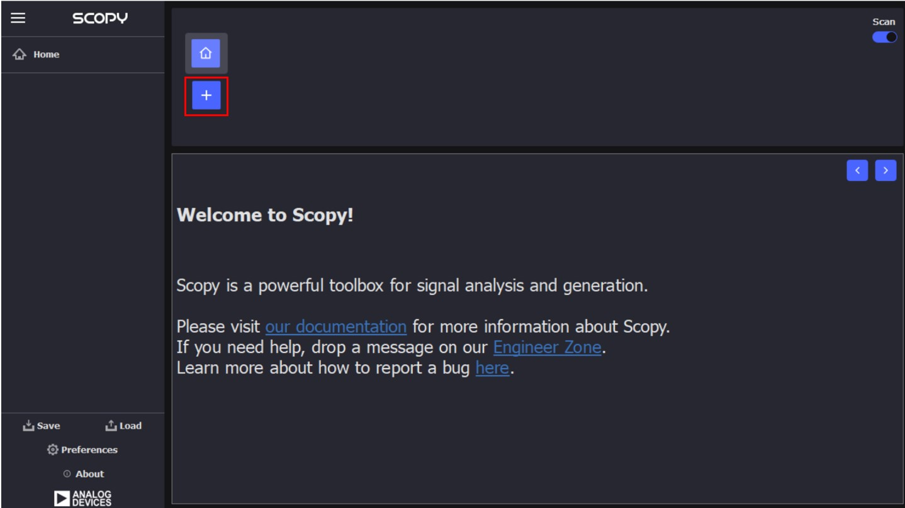
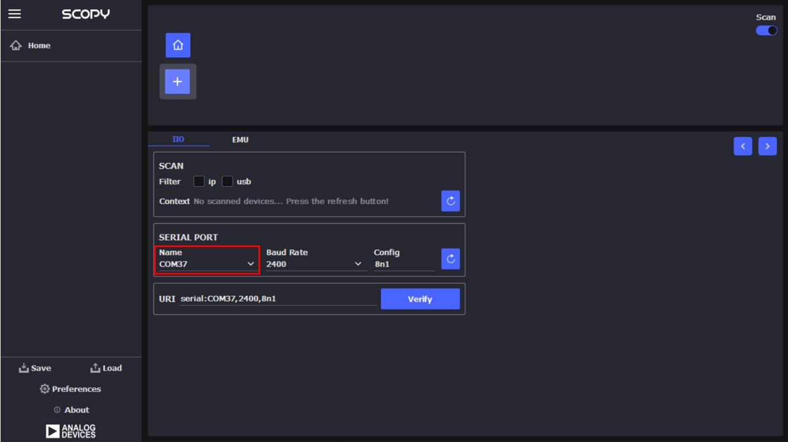
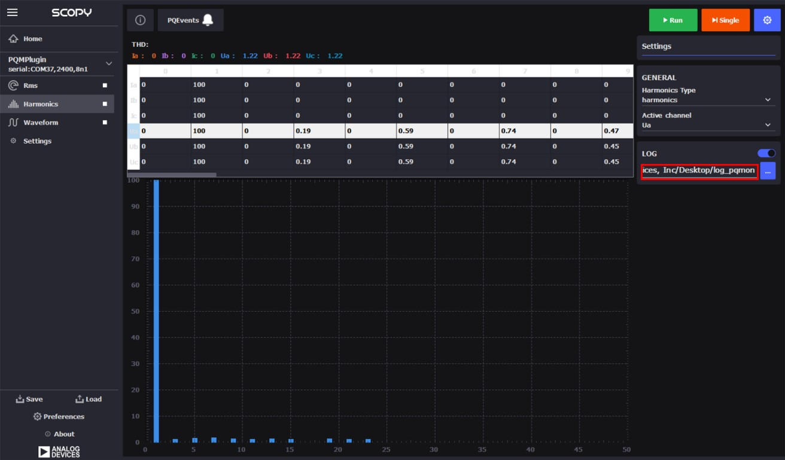
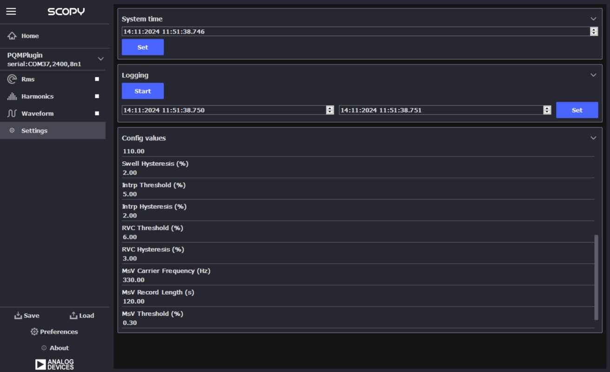

For Scopy installation, follow the steps indicated
in the user guide.
After making the board connections and installing Scopy,
connect to the GUI by following these steps:
Connect the USB Type-C cable from the AD-PQMON-SL board to your PC.
Launch the installed Scopy application.
Click the “+” button as shown in the following image:

In the window that opens, click the refresh button as shown in the following image:
From the drop-down menu labeled PORTNAME, select the COM port connected
to the AD-PQMON-SL board (for example, COM37).
After selecting the correct COM port, the URI field will be automatically populated.

Click the Verify button.
Ensure that PQMPlugin is selected in the plugin list.
Click the ADDDEVICE button.
In the next window, click the Connect button.
A confirmation message, as shown in the following image, indicates a successful connection.
Measurements
The measurements tabs are available on the left side of the GUI:
RMS Tab
The RMS tab can be activated by clicking on it and then selecting the
Run button.
The PQEvents indicator notifies the user when a PQ event has occurred. Events are
saved in the log file if logging is enabled.
If an event occurs during the session, the PQEvents indicator will become
active. The event details can be found in the log file (in the RMS tab, only PQ
events are logged). The indicator remains active until the user clicks on it, which
resets the indicator. Even if the indicator is not reset, any new event will be
registered in the log file.
Logging can be enabled only when the measurement is not running. First, select the
LOG button. Then, specify a log directory by clicking the button highlighted in the
following image.
Choose a folder where the data will be saved in CSV format. The
file will be named as follows: “nameofactivewindow_date_time.csv”
(e.g. rms_01-01-2024_11-00-00).
After the folder is selected, data will be recorded during a session. The
session starts when the Run button is activated and ends when it is
stopped.
A snapshot of an RMS log file is shown in the following image. As seen,
several PQ events occurred during the session.
Harmonics Tab
The Harmonics tab can be activated by clicking on it and then selecting the
Run button.
To display the harmonics for different waveforms, select the desired line from the
table above the graph.
The THD (Total Harmonic Distortion) values are shown for each measurement next to the THD label.
The PQEvents indicator notifies the user when a PQ event has occurred. Events are
saved in the log file if logging is enabled.
The user can select between viewing harmonics or interharmonics.
Logging can be enabled only when the measurement is not running. First, select the
LOG button. Then, specify a log directory by clicking the button highlighted in the following image.
Choose a folder where the data will be saved in CSV format. The
file will be named as follows: “nameofactivewindow_date_time.csv”
(e.g. harmonics_01-01-2024_11-00-00).
After the folder is selected, data will be recorded during a session. The
session starts when the Run button is activated and ends when it is
stopped.

If an event occurs during the session, the PQEvents indicator will become
active. The event details can be found in the log file. The log file in the Harmonics
tab contains both the harmonics values and the PQ events, interleaved at the time
the event occurred. The indicator remains active until the user clicks on it, which
resets the indicator. Even if the indicator is not reset, any new PQ event will be
registered in the log file.
A snapshot of a harmonics log file containing only harmonics data is
shown in the following image.
In the following snapshot, PQ events can be seen interleaved with
the harmonics values.
Waveforms Tab
The Waveform tab can be activated by clicking on it and afterwards select the
Run button.
The upper side graph is the voltage and the one to the bottom is the current.
To zoom in use the mouse to click and drag.
The log file can also be activated in the waveforms tab in the same manner
explained in the rms or harmonics sections, but in this case the PQ events is
not present. If PQ events need to be recorded, then the other two tabs (rms,
harmonics) must be used. The data logged in this tab contains only the
waveforms values.
A snapshot of a log file can be seen in the following image.
Settings Tab
The Settings tab is used to read and set the thresholds and the config values.
Activate it by selecting it from the right-side menu.
To see all the parameters scroll down
To read the values that are currently set click the Read button.

To modify a parameter select it, change its value to the desired one and click
the Set button.
Tip
More information about the Scopy PQMON addon can
be consulted
here
The system comes pre-programmed with a firmware that works with the Scopy
application, allowing complete system evaluation.
{kind=link}
{kind=link}
{kind=link}

{kind=link}